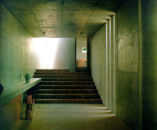

Frank house (HouseVI), West Cornwall, Connecticut, 1972
Peter Eisenman
Houses of the Century
Anatxu Zabalbeascoa |
Peter Eisenman is always searching for new
spaces. House VI was his sixthe experiment in questioning the
essenence of the domestic space on the basis of an inversion
of its architectural elements. On the picture on the right you
can seen the bedroom. The beds seem to stand outside the house
against two pieces of wall. Between these pieces daylight enters
the room.
|
|
|
Ishii Residence, Hamamatsu, Shizuoka, 1980-1982, Tadao
AndoGA
Houses 14
A.D.A. EDITA Tokyo |
The Ischii House has a L-shaped plan with
a garden at the remaining square. The "foot" of the
L consists of a living room, 1.5 stories high. The foot consists
of the other rooms divided over 2 floors. On the photograph on
the right the interior of the living room can be seen and the
stairs which lead to the kitchen and dining area. The bare concrete
and the limited entrance of daylight cause a bare, dark but exiting
atmosphere. |
 |
|
Schindler-Chase House, West Hollywood, California, 1921-1922
Rudolph SchindlerAmerican Masterworks
Frampton / Larkin |
The house has been designed for two couples
(Schindler and his wife and Chase with his wife). Each individual
has his or her own self-contained studio so they can live independently
from each other. Each couple has it's own entrance-hall and bathroom.
The communal kitchen was designed to be shared by the two couples.
The house has been build out of precast wall panels made of reinforced
concrete. The three-inch gaps between the concrete panels were
either left open for ventilation or filled with glass. On the
photographs the panels can be seen from the in- and outside.
On the picture on the right daylight is coming between the panels
into the room. In the opposite wall bigger windows provide also
for daylight. |
|